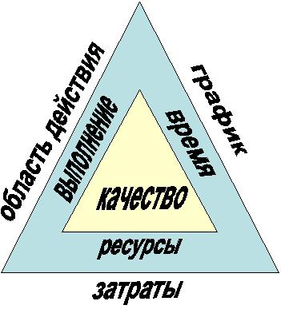

Основные понятия и определения
Любой большой и сложный проект может быть легко разбит на явное количество задач и действий, необходимых для его завершения. Достаточно удобным является разделение проекта на группы задач, благодаря чему облегчается понимание и организация выполнения этих задач. Действия будут рассматриваться как группы задач, а фазы - как группы действий.
Итак, при рассмотрении управления программными проектами можно использовать такие определения:
Задача - общий термин для работы, которая не включена в структуру пооперационного перечня работ, но потенциально может быть разбита на части лицами, ответственными за ее выполнение. Также этот термин обозначает минимальный уровень трудозатрат в рамках проекта.
Действие - элемент работы, выполненной в процессе реализации проекта. Обычно имеет ожидаемую продолжительность и стоимость, а также прогнозируемые требования к ресурсам, кроме того, оно может быть разделено на отдельные задачи.
Фаза - это собрание связанных действий или задач, в процессе выполнения которых реализуется производство рабочего или поставляемого продукта.
Система - организованная группа элементов, которая имеет границу, определяющую ее открытость или закрытость (взаимодействие с окружением), и которая действует как единое целое для достижения общей цели.
Проект - уникальное, ориентированное на достижение цели, срочное и ограниченное условиями действие.
Программа - совокупность взаимосвязанных проектов.
Инжиниринг ПО - регламентированный, системный подход к разработке, оперированию, обслуживанию и прекращению эксплуатации ПО с помощью практического применения научных методов
Процесс - ряд действий, которые преобразуют набор входных данных в какой-либо результат. Различают процессы проекта и процессы продукта.
К процессам проекта относится описание и организация работы в рамках проекта.
К процессам продукта - определение и создание продукта проекта.
Понятие проекта напрямую связано с так называемым треугольником менеджмента проектов, представленного на рисунке 1.1

Рисунок 1.1 - Треугольником менеджмента проектов
В ходе осуществления проекта ставится задача поставок продукта с определенной областью действия, стоимость которого остается в заданных пределах, выдерживается определенный график выполнения, а также достигается определенная степень качества.
Задача менеджеров проекта состоит в том, чтобы уравновешивать производительность (область действия), время (график) и ресурсы (стоимость). Нередко бывает, что график, бюджет и качество не выдерживаются на требуемом уровне. Поэтому руководители вынуждены выбирать в качестве первичной цели один или два параметра качества. На профессиональном жаргоне это звучит как «треугольник хорошо-быстро-дешево - выбери два из них».
Программа подобна проекту (не путать с программным продуктом!). Однако эти термины различны. Существует множество определений программы, обобщая которые можно сказать, что программа - это большое и продолжительное предприятие с нечетко сформулированными датами окончания и целями, состоящее из взаимосвязанных и совместно управляемых проектов.
Управление проектами (Менеджмент проектов) - специализация общего менеджмента, определяющая применение стандартных руководящих навыков планирования, организации, комплектования персоналом, продвижения, а также управления и контроля для достижения определенных целей проекта. Основные управляемые факторы проекта: затраты, время, ресурсы, стоимость, качество.